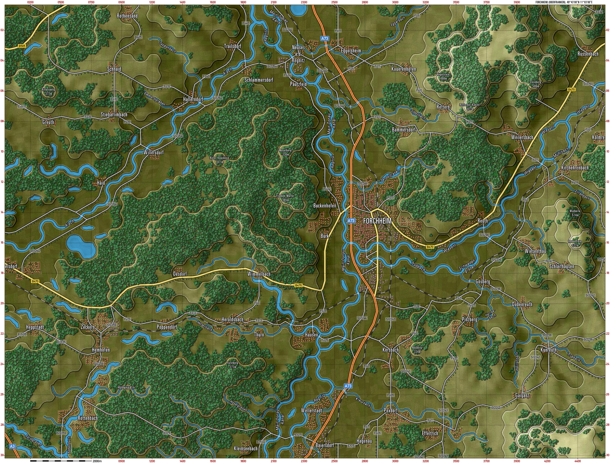

Skip to content
Flashpoint Campaigns Documentation
Forchheim
Initializing search
Game Info
Gameplay Manuals
Reference Guides
Content Manuals
Flashpoint Campaigns Documentation
Game Info
Game Info
FAQ
Setup
Releases
Credits
Backend
Backend
Section
Macros
Military Symbol Test
Gameplay Manuals
Gameplay Manuals
FM01 Game Operations
FM01 Game Operations
Welcome Commander Screen
User Preferences
Start a New Scenario
Start a New Campaign
Start a PBEM++ Game
Starting a PBEM Classic Game
Resuming Games
Game Launch and User Interface
Announcement Dialog
Main Menu Bar
Status Bar
Core Game Panels
Info View Panels
Staff Dialogs
The Game Map
Unit Counters
Specific Unit Roles
Special Unit Types
Order of Battle (OOB) Tree
Issuing Orders
Plotting Movement and Fires
Standard Operating Procedures (SOP)
Spotting and Line of Sight (LOS)
Combat Operations
Combat Soft Factors
Supply and Logistics
Time of Day
Weather
Victory Conditions and End Game
Campaign Game Play Overview
Designer Notes
FM02 Battlefield Primer
FM02 Battlefield Primer
Surviving Modern Warfare
Tips and Tricks – Helpful Staff Tips
Types of Units in the Game
NATO Symbols
Force Organization
Counter Layout and Map Objects
Table of Common Abbreviations
FM03 Tutorials
FM03 Tutorials
Engineer Operations
Artillery Operations
Air Support Operations
Air Assault Operations
Military Convoy Operations
Hotkeys
Reference Guides
Reference Guides
WW3 Timeline
Maps
Maps
Aichelberg
Aiterhofen
Amberg
Arolsen
Arracourt
Bad Driburg
Bad Duerrheim
Bad Neustadt
Bad Windsheim
Bamberg
Bielefeld
Bischofsheim
Braunschweig
Breitenbach am Herzberg
Buchholz
Coburg
Colmar
Dieburg
Ebelsbach
Eiterfeld
Epinal
Erbendorf
Forchheim
Freiburg
Fulda
Germersheim
Gersfeld
Geseke
Goeppingen
Grafenwoehr
Haiger
Hameln
Hanau
Hannover-Doehren
Heilbronn
Herford
Holle
Kahl am Main
Kemnath
Kinding
Kirchheim u Teck
Koenigsfeld
Kronach
Kulmbach
Landau ad Isar
Langquaid
Lauterbach_Hessen
Lechfeld
Leupoldsgruen
Lichtenfels
Marburg
Marktredwitz
Melsungen
Minden
Montabaur
Nagold
Neuffen
Neuwied
Nidda
Norderfurt
Nordheim
Pegnitz
Pfoerring
Phalsbourg
Rastatt
Reichelsheim
Rottenburg
Rottweil
Salzgitter
Sarrebourg
Schesslitz
Schluechtern
Schotten
Seligenstadt
Soest
Tuebingen
Unna
Warburg
Wendlingen
Westhausen
Wildberg
Windischeschenbach
Campaigns
Campaigns
CA1 SN1 Hold Them Here
CA1 SN2 Opportunity Knocks
CA1 SN3 A Little Farther
CA1 SN4 Anvil
CZ1 SN1 On Your Mark
CZ1 SN2 Gaining Speed
CZ1 SN3 Change of Plans
CZ1 SN4 Going for Gold
EG1 SN1 Liberation Begins
EG1 SN2 The Kitchen Sink
EG1 SN3 Joy Ride
EG1 SN4 Valley of the Damned
EG1 SN5 For the Fatherland
Bridges to Nowhere
Go West
Tripwire
Epilogue
NATO Campaigns
UK1 SN1 Battle of Braunschweig
UK1 SN2 Fancy Meeting You Here
UK1 SN3 The Ghost of Arminius
UK1 SN4 Tea Time
Scenario Briefing: A Fog of War
Scenario Briefing: A Tall Order
Scenario Briefing: The Iron Rangers
Scenario Briefing: Percutio
Scenario Briefing: Deathmatch
Stop Gap
Holding the Line
Push Back
Revisiting Schotten
Red Hammer
Goddess Of War
Valley of Death
Hells Gate
Gotterdammerung
A Beautiful Morning
Sun in the Forescast
Traffic Stop
All That Glitters
Leading the Way
Uphill Struggle
Night Knights
Coburg Pocket
Operation Entgleisen
Blood Trail
One Last Catfight
Warsaw Pact Campaigns
Scenarios
Scenarios
A Brief Moment In Time
A Final Push
A Second Dance
A Time To Dance
A tough nut to crack
Air and Land
An autobahn too far
Armageddon's Dawn
Beaning the Beamers
BREAKAWAY
Brothers in Arms
Chance Encounter
CROSS CHECKING
Crossing the Waldnaab
Desperation
Desperation
End of the road
Every cat is black at night
Eyes, Ears and Teeth
Falling from the sky
Finale
First Clash
Flying Scotsmen
For Queen and Country
GM Giraud
Go West Young Man
Hammer Falls
HIGH STICKING
Hnfeld Bridges
Hunting in the Woods
It Begins
Kampfgruppe Becker
Lesson of War
Link Up
Meeting in Arolsen
Once more unto the breach
Overture
Panzers Forward
Pursuit
Quietly flows the Donau
Race to the Fulda
Regulars Forward
Return to Fulda
Rude Awakening
Schlact bei Diemelstadt
Seek, Fix, Destroy
Soviet Main Attack Force
Steel Rain
The Armored Fist
The Battle Of The Nations
The Donau Gap
The First Dance
The Great Escape
The Heilbronn Gambit
The Long Night
The Moles of Minden
The Neckar Line
The ordeal of the 4th Lancers
The Ride of the 12th Cuirassiers
The Screen
The Squeeze Play
The Three Sisters
Tutorial 07 Engineer Operations
Tutorial 08 Artillery Operations
Tutorial 09 Air Support Operations
Tutorial 10 Air Assault Operations
Tutorial 11 Military Convoy Operations
Forces
Forces
WP
WP
Sources
Content Manuals
Content Manuals
Scenario Design
Scenario Design
Getting Started
The Top Menu
Creating a New Scenario
Battle Plans
Altering an Existing Scenario
Updating Scenario Data
HTML Quick Reference
Some Scenario Design Do’s and Don’t’s
Battle Planning
Battle Planning
Getting Started
Creating Battle Plans
Battle Plans SOPs
Battle Plans for Off-map Artillery and Air Force
Battle Planning Dos and Don’t
Campaign Design
Campaign Design
Creating a Campaign Scenario
Campaign Editor
Tips, Tricks, and Best Practices
Map Construction
Map Construction
Map Making
Example Map Area and Example QGis Project
Getting Started
Defining Our Map
Exporting Our 'Elevation Only' Map for Map Values Scanning
Intermezzo: The Terrain per OTS Render Tool
Drawing Our Map: Water and Roads
Drawing on Our Map: Towns, Minor Roads, and Railroads
Drawing on Our Map: Minor Rivers, Streams, Forests and Fields
Prettying up Our Map with Labels
Creating Our Second Map
Appendix A. Example Project
Appendix B. Default FCSS Map Data Types
Appendix C. UTM zones
Appendix D. Representing Water Obstacles
Appendix E. Creating a New Elevation Correction Layer
Making Mods
Making Mods
Getting Started
Replacing National Art Assets
Animations
Counter Art Elements
Map Markers
Art Restrictions
Replacing Sound Assets
Editing Game INI Files
CSS Files
Sil Making 101
Data Structures & Editing
Data Structures & Editing
Location of Data Files
Data File Structure Overview
Platform Types
Platform Characteristics
Command
Formations
Description (IUnits
Defining Armor Value and Specials
Air Unit Size and PF Rating Calculator
Systems
Weapon Munition Types
Surnames
Credits
Notice
Data Folder Setup
Using the Data Validation Tool
File XLS Import/Export Editing
Future Updates
Weather Setup
Weather Setup
Weather System
Weather in the Game
Weather Data Files
Tips for Creating Your Own Weather Data
Forchheim
Briefing Map
Gameplay Map

Back to top

{kind=link}